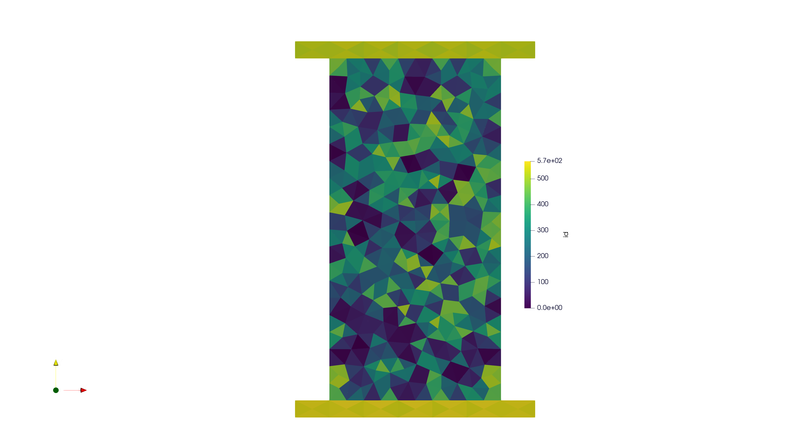

Tutorial 1: UCS model from Gmsh#
This example will review how to setup a uniaxial compressive test example with output from Gmsh software.
Runtime: <10 min on i9 8-core Windows 10 Machine
Expected tutorial output (visualized in ParaView):
{kind=link}
OpenFDEM supports four main mesh pre-processing approaches:
A user defined command in OpenFDEM to create mesh automatically
Importing a
.geofileImporting a
.mshfileMesh developed from other commercial softwares, including
.inp,.dxf,.fdem,.tess(for grain-based model only) and.jpg(for grain-based module and DFN module only).
Tutorial Prerequistes#
The following files are needed to follow along the tutorial:
example_UCS.geo (click to download from Gitlab)
example_UCS.msh (click to download from Gitlab)
Tutorial Steps#
OpenFDEM tutorials have the same main steps:
Mesh pre-processing steps.
Materials definition.
Define boundary conditions.
Specify the outputs.
A .log file is auto-generated by default in the same folder as the input file. To disable the logging, specify this
line into the input file:
of.debug off
Mesh Pre-processing#
Create a new empty text file (later add the .of extension). Begin writing the following commands:
of.new
# create a domain xmin =-25e-3, xmax =25e-3 , ymin=-50e-3, ymax=50e-3
# The domain is mandatory when the particles or material points are used
of.geometry.domain -25e-3 25e-3 -50e-3 50e-3
# Create a retangular block, group tag is specimen, the range is xmin =25e-3, xmax =25e-3, ymin=-50e-3,ymax= 50e-3
of.geometry.square 'specimen' -25e-3 25e-3 -50e-3 50e-3
# Create a block for the upper plate
of.geometry.square 'up_plate' -35e-3 35e-3 50e-3 55e-3
# Create a block for the down plate
of.geometry.square 'down_plate' -35e-3 35e-3 -55e-3 -50e-3
After creating geometry entities, you can assign mesh size to the whole model with all keyword and it is also possible to assign
mesh size to specific entities:
''' There are four methods to create mesh, 1- user defined commands in prepprocessing, it will call gmsh kernel to mesh the geometry
, 2- import .geo file for gmsh, 3- import .msh file (less than V 2.4) and 4- import .inp file from other codes '''
# assign global mesh size, the default keyword is for global entities
of.geometry.mesh.size 'all' 10e-3
# assign specific mesh size to group 'specimen'
of.geometry.mesh.size 'specimen' 5e-3
OpenFDEM will call the Gmsh kernel to generate mesh after the mesh size is assigned. The meshing scheme includes delaunay (default),
meshadapt and frontal-delaunay . The gmsh interface will be called and you can check the mesh quality, recombine the mesh or change mesh size in gmsh pannel.
# starts to mesh, delaunay is optional, it is the default value
of.geometry.mesh delaunay
Cohesive elements can be inserted after importing the mesh. OpenFDEM supports to partially insert cohesive elements and also supports inserting extrinsic cohesive elements.
#insert cohesive elements, it is aviable to insert CZM in the whole model or to a specific entity
of.mesh.insert 'specimen'
Materials Definition#
Material parameters contain three parts: - The parameter for solid matrix - Solid cohesive elements and - Contacts
The paramters will be allocated to the user-defined element groups.
# assign material parameters to solid elements based on the element groups
of.mat.element 'specimen' ELASTIC den 2700 E 30e9 v 0.3 damp 0.6
of.mat.element 'up_plate' ELASTIC den 2700 E 70e9 v 0.2 damp 0.9
of.mat.element 'down_plate' ELASTIC den 2700 E 70e9 v 0.2 damp 0.9
#assign material parameters to cohesive elements, the default is a reserved keyword means the whole entities
# user are not allowed to use this keyword for the group tags
of.mat.cohesive 'all' EM ten 1e6 coh 3e6 fric 0.3 GI 10 GII 50 beta_I 0 beta_II 0
#assign material parameters to contact
of.mat.contact 'all' MC fric 0.3
Define Boundary Conditions#
The boundary conditions are defined by the entity groups.
#create up_plate and up_plate nodal physical groups from element groups
# the element physcial groups are inherited from the msh file in geometry
of.group.nodal.from.element 'up_plate' 'up_plate'
of.group.nodal.from.element 'down_plate' 'down_plate'
#assign Dirichlet boundaries, the fixed velocities in X and y directions are added to the
# nodal groups
of.boundary.nodal.velocity 'up_plate' XY 0.0 -0.05
of.boundary.nodal.velocity 'down_plate' XY 0.0 0.05
Post-Processing Settings#
#set for post-processing; how often to output the results + variables (of.history.all would export all variables, but large file....)
# interval to write history
of.history.interval 10
# interval to write paraview field results
of.history.pv.interval 5000
'''Export field variables, default is to export all variables, the user can choose to export specific variables using keywords'''
of.history.pv.field all
of.history.pv.fracture all
# monitor the average nodal displacemnt in upper plate every step
of.history.nodal.group.dis 1 'up_plate'
# monitor the average stress (tensor) in the specimen
of.history.element.group.stress 2 'specimen'
Run models#
Finally, define the number of time-steps:
# total run steps
of.step 150000
Full Tutorial Script#
To run the model, save your text file with the .of extension. Rebuild the openfdem solution and drag your .of file into the OpenFDEM.exe. It will automatically run and save the outputs.
Complete script below:
of.geometry.square 'specimen' -25e-3 25e-3 -50e-3 50e-3
# Create a block for the upper plate
of.geometry.square 'up_plate' -35e-3 35e-3 50e-3 55e-3
# Create a block for the down plate
of.geometry.square 'down_plate' -35e-3 35e-3 -55e-3 -50e-3
''' There are four methods to create mesh, 1- user defined commands in prepprocessing, it will call gmsh kernel to mesh the geometry
, 2- import .geo file for gmsh, 3- import .msh file (less than V 2.4) and 4- import .inp file from other codes '''
# assign global mesh size, the default keyword is for global entities
of.geometry.mesh.size 'all' 10e-3
# assign specific mesh size to group 'specimen'
of.geometry.mesh.size 'specimen' 5e-3
# starts to mesh, delaunay is optional, it is the default value
of.geometry.mesh delaunay
#insert cohesive elements, it is aviable to insert CZM in the whole model or to a specific entity
of.mesh.insert 'specimen'
# assign material parameters to solid elements based on the element groups
of.mat.element 'specimen' ELASTIC den 2700 E 30e9 v 0.3 damp 0.6
of.mat.element 'up_plate' ELASTIC den 2700 E 70e9 v 0.2 damp 0.9
of.mat.element 'down_plate' ELASTIC den 2700 E 70e9 v 0.2 damp 0.9
#assign material parameters to cohesive elements, the default is a reserved keyword means the whole entities
# user are not allowed to use this keyword for the group tags
of.mat.cohesive 'all' EM ten 1e6 coh 3e6 fric 0.3 GI 10 GII 50 beta_I 0 beta_II 0
#assign material parameters to contact
of.mat.contact 'all' MC fric 0.3
#create up_plate and up_plate nodal physical groups from element groups
# the element physcial groups are inherited from the msh file in geometry
of.group.nodal.from.element 'up_plate' 'up_plate'
of.group.nodal.from.element 'down_plate' 'down_plate'
#assign Dirichlet boundaries, the fixed velocities in X and y directions are added to the
# nodal groups
of.boundary.nodal.velocity 'up_plate' XY 0.0 -0.05
of.boundary.nodal.velocity 'down_plate' XY 0.0 0.05
#assign global damping value, the value should not be over 1.0
# the default value is 0.7
of.damp.global 0.5
#set for post-processing; how often to output the results + variables (of.history.all would export all variables, but large file....)
# interval to write history
of.history.interval 10
# interval to write paraview field results
of.history.pv.interval 5000
'''Export field variables, default is to export all variables, the user can choose to export specific variables using keywords'''
of.history.pv.field all
of.history.pv.fracture all
# monitor the average nodal displacemnt in upper plate every step
of.history.nodal.group.dis 1 'up_plate'
# monitor the average stress (tensor) in the specimen
of.history.element.group.stress 2 'specimen'
# total run steps
of.step 150000